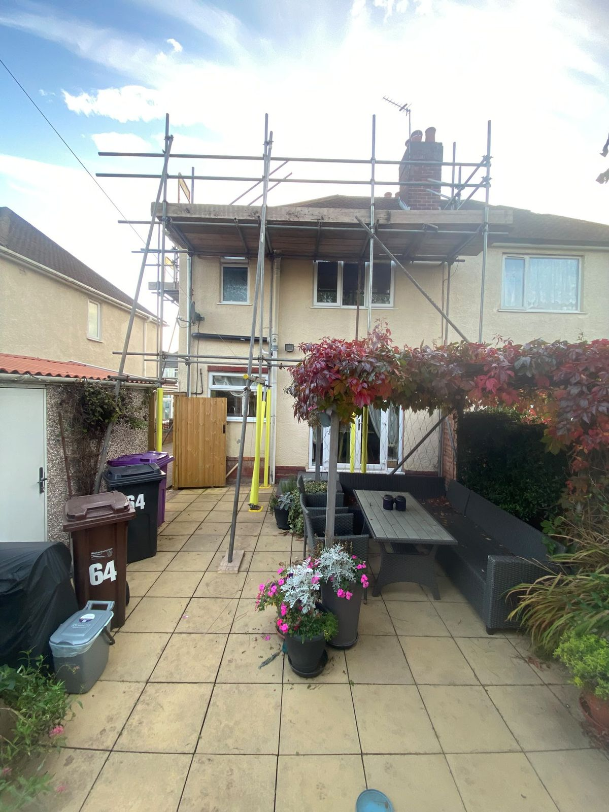

Scaffolding acrossWolverhampton.
Reliable scaffolding for solar installs, roof repairs and building work, from the Midlands Solar group.
Who we are
Scaffolding from the
Midlands Solar group.
We're the sister company of Midlands Solar Installations Ltd. We scaffold their solar installs, and take on independent jobs for homeowners, builders and businesses.
Fully boarded and guarded
Every lift boarded out, with guardrails and toe boards.
Inspected and tagged
Checked and tagged at handover, ready for the next trade.
Short notice where we can
Call us with your dates and we'll do our best to fit you in.
What we scaffold
Scaffolding for every
kind of job.
 →
→Solar panel installs
Safe roof access for solar fitters, with edge protection at the eaves.
 →
→Roof repairs
Fully boarded lifts to the gutter line, so roofers can work and store tiles safely.

→Chimney work
Chimney stack scaffolds for repointing, flashing and capping.
 →
→Gutters and fascias
Quick, tidy scaffolds for roofline, gutter and painting work.
 →
→Building and extensions
Scaffolds that grow with the build, from the first lift to the roof.
 →
→Commercial and industrial
Shops, units and larger buildings, planned around your site.
Safety first
What a safe
scaffold has.
Strong foundations
Base plates on timber sole boards, so nothing sinks or moves.
Secure supports and braces
Diagonal braces stop the scaffold racking sideways.
Fully boarded platforms
A complete working surface with no gaps.
Guardrails and toe boards
Rails at the right heights, and a board to stop tools falling.
Safe access
A secured ladder to every lift, with a gate at the top.
Regular inspections
Checked before use, after bad weather, and at least every seven days.
No overloading
Only the people and materials the scaffold was built for.
Tied to the building
Ties hold the scaffold firmly to the wall.
Myth or fact
Scaffolding myths,
sorted out.
Tap a card to flip it.
All scaffolding systems are the same.
Tap to see the factTube-and-fitting scaffolds, system scaffolds and mobile towers have different assembly requirements, load capacities and uses. The right one depends on the work, the site and the access needed.
Once it's up, it can be left alone.
Tap to see the factA scaffold must be inspected before first use, after anything that could affect it such as bad weather, and at least every seven days while it's in use.
You can take a few boards off if they're in the way.
Tap to see the factOnly a competent scaffolder should alter a scaffold. Removing boards, rails or ties can make it unsafe for everyone on it.
Scaffolding is only needed for big jobs.
Tap to see the factEven short jobs at height, like clearing gutters or fixing a few tiles, are safer and often quicker from a properly boarded platform.
Common questions
Before you book.
How quickly can you put a scaffold up?
We do our best to fit short-notice jobs in. Most domestic scaffolds go up in a day once booked. Call us with your dates and we'll tell you what we can do.
Do I need permission for scaffolding?
Not on your own land. If any part of the scaffold sits on the pavement or road, a licence from the council is needed. We'll tell you if your job needs one.
How long can I keep it?
As long as the work takes. We agree a hire period up front, and you can extend it if the job runs over.
Who checks the scaffold is safe?
We inspect it before handover and tag it. While it's up it must be inspected at least every seven days and after bad weather.
Will it damage my garden or drive?
Every upright sits on a base plate and timber sole board, which spreads the load. We protect paving and lawns and leave the site tidy.
Free quote
Talk to the team.
Tell us about the job and we'll get back to you with a price. Or call us now.
Need scaffolding
at short notice?
Get in touch and we'll do our best to fit your project in.